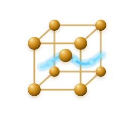

SILMLigações MetálicasSILM · A ARQUITETURA DOS METAIS
Ligações Metálicas. Uma investigação coletiva.
Observe. Manipule. Registre. Investigue.
Escolha seu próximo passo
Da exploração livre à atividade orientada.
Atividade em andamento
Atividade Progresso preservadoLaboratório de ligações metálicas
Modo de trabalho livre.
Visão geral da cena
Selecione um objeto para retornar ao foco.
Workspace pronto.
Ambiente de integração do SILM. A distribuição completa está disponível na página inicial.
Roteiros Experimentais
Aprender — Temas
Explore os conceitos na ordem que preferir.
Missões
Manual do SILM
Caderno de observações
Área do Professor
Apresentação da tabela periódica e investigação dos metais com o mesmo banco científico.
PREFERÊNCIAS
Seu ambiente, suas escolhas
As preferências pertencem à plataforma, independentemente do simulador que será instalado.
Escolha o tema da interface.
Instalação e acesso offline
O programa utiliza recursos incorporados. Em HTTPS ou localhost, a PWA pode armazenar os arquivos essenciais; o pacote standalone pode ser aberto diretamente sem conexão.
Verificando modo de execução...
Caso não apareça a opção de instalação, utilize o menu do navegador quando disponível. O armazenamento local depende das permissões e do espaço do dispositivo; exporte backups regularmente.
O contraste e a redução de movimento respeitam as preferências do navegador. Controles de acessibilidade adicionais permanecem sujeitos à homologação.
Sobre o SILM
Simulador Interativo de Ligações Metálicas — A Arquitetura dos Metais.
Este ambiente conecta o domínio científico do SILM 0.14.0 à Base SI 0.9.13. A integração está em desenvolvimento.
Medir e Calcular estão integrados ao mesmo estado científico. As propriedades metálicas usam o motor científico do SILM. Os roteiros experimentais e seus relatórios usam a mesma investigação científica. O laboratório, os conteúdos e as atividades compartilham esta interface.